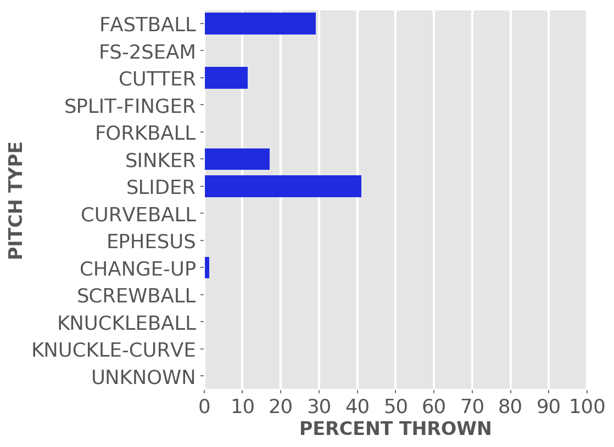
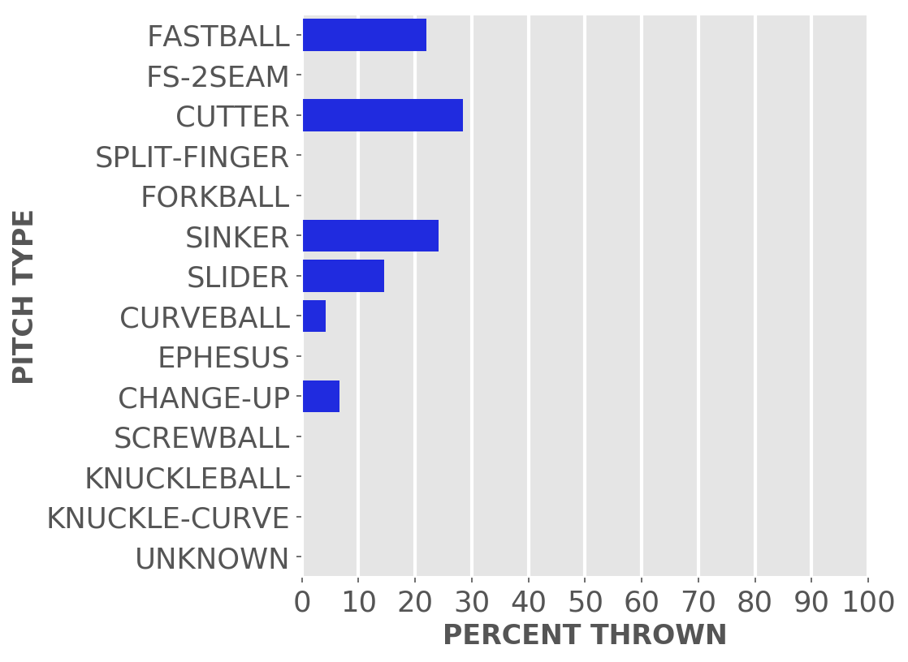
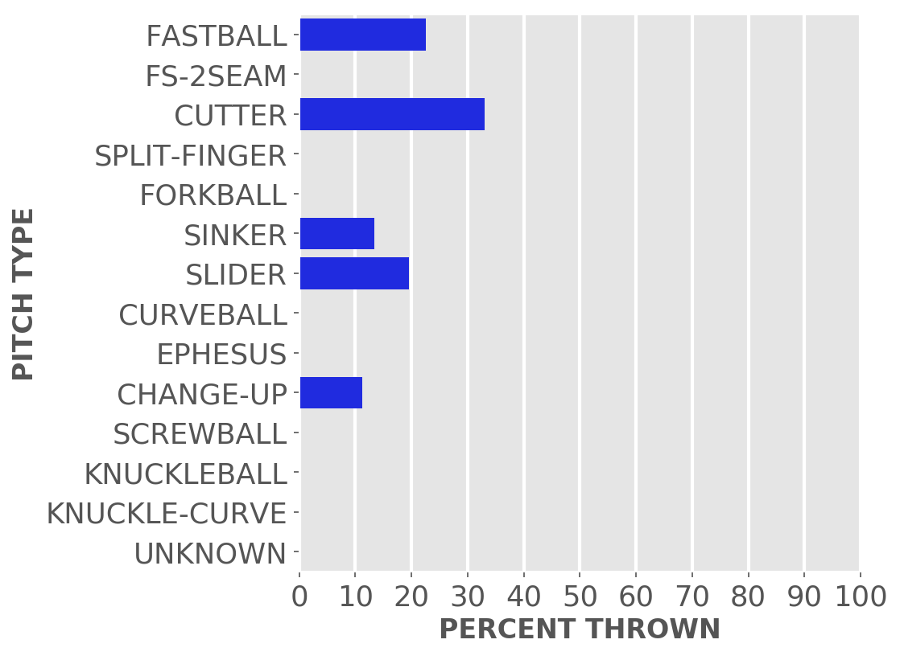
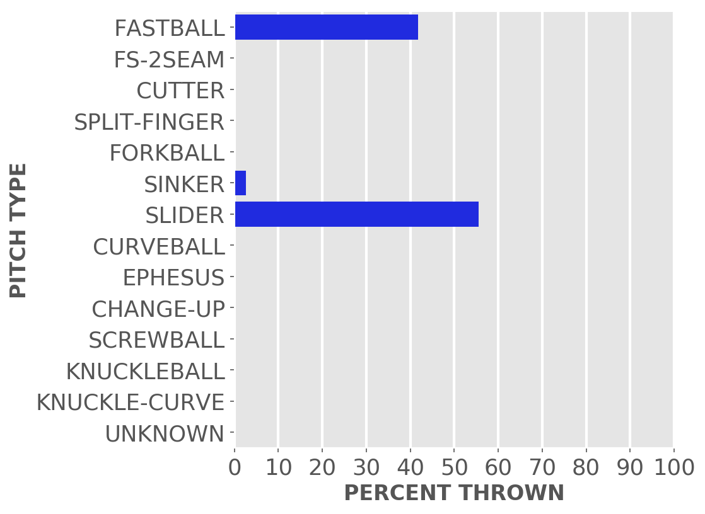
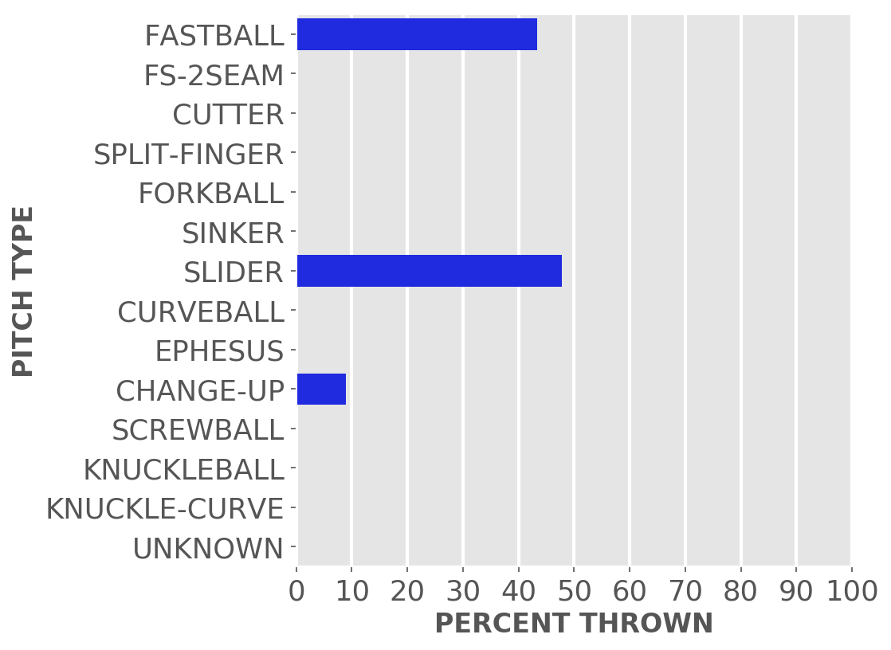

Chicago baseball
Cubs
A little-more-than-casual but not-very-wonky statistical look at the current season
Just enough stats to feed into the anxieties of your typical Cubby fan.
Updated Tuesday, May 30, at 12:36 p.m. Pybaseball gathers these from Baseball-reference.com.
Games
JUMP TO TOP | BATTERS | PITCHERS
On Monday, May 29, the Cubs won a day game at home against the Rays, 1 to 0, in 9 innings. The winning pitcher was Stroman, losing pitcher was Bradley. Save: None.
Next scheduled game: Tuesday, May 30, a game at home with the Rays.
Summary results by team
| Team | Wins | Loses | Avg. Cubs runs | Avg. runs against |
|---|---|---|---|---|
| Astros | 0 | 3 | 4.33 | 6.67 |
| Athletics | 3 | 0 | 8.67 | 1.0 |
| Brewers | 1 | 2 | 3.33 | 4.0 |
| Cardinals | 1 | 2 | 5.0 | 4.33 |
| Dodgers | 3 | 4 | 4.86 | 4.0 |
| Mariners | 2 | 1 | 6.33 | 5.33 |
| Marlins | 2 | 4 | 3.83 | 3.67 |
| Mets | 2 | 1 | 4.0 | 4.67 |
| Nationals | 1 | 3 | 2.5 | 2.75 |
| Padres | 2 | 1 | 4.67 | 2.33 |
| Phillies | 1 | 2 | 4.67 | 5.0 |
| Rangers | 2 | 1 | 4.67 | 3.67 |
| Rays | 1 | 0 | 1.0 | 0.0 |
| Reds | 1 | 4 | 5.6 | 7.4 |
| Twins | 1 | 2 | 3.33 | 9.67 |
Batters
JUMP TO TOP | GAMES | PITCHERS
Click the link under a player's name to get up-to-speed on a player at bat.
Tucker Barnhart #18, C
| Status (A = active) | A |
| Bats/Throws | L/R |
| Plate appearances | 69 |
| At bats | 59 |
| Hits | 10 |
| Home runs | 0 |
| Batting Avg. | 0.169 |
| Runs | 1 |
| RBI | 3 |
| On-base percent | 0.275 |
| Weighted OBP | 0.225 |
| Slugging % | 0.186 |
| Stolen bases | 0 |
| Caught stealing | 0 |
Other measures
| Weighted runs above avg. (wRAA) | -5.3 |
| Runs Above Replacement (RAR) | -0.2 |
| Fielding RAR | 2.0 |
| Wins above replacement (WAR) | 0.0 |
Cody Bellinger #24, CF
| Status (A = active) | D10 |
| Bats/Throws | L/L |
| Plate appearances | 163 |
| At bats | 144 |
| Hits | 39 |
| Home runs | 7 |
| Batting Avg. | 0.271 |
| Runs | 29 |
| RBI | 20 |
| On-base percent | 0.337 |
| Weighted OBP | 0.352 |
| Slugging % | 0.493 |
| Stolen bases | 9 |
| Caught stealing | 2 |
Other measures
| Weighted runs above avg. (wRAA) | 4.5 |
| Runs Above Replacement (RAR) | 14.1 |
| Fielding RAR | 1.0 |
| Wins above replacement (WAR) | 1.4 |
Yan Gomes #15, C
| Status (A = active) | A |
| Bats/Throws | R/R |
| Plate appearances | 115 |
| At bats | 107 |
| Hits | 30 |
| Home runs | 6 |
| Batting Avg. | 0.28 |

| Runs | 15 |
| RBI | 19 |
| On-base percent | 0.304 |
| Weighted OBP | 0.324 |
| Slugging % | 0.458 |
| Stolen bases | 1 |
| Caught stealing | 0 |
Other measures
| Weighted runs above avg. (wRAA) | 0.5 |
| Runs Above Replacement (RAR) | 5.3 |
| Fielding RAR | -0.9 |
| Wins above replacement (WAR) | 0.5 |
Ian Happ #8, LF
| Status (A = active) | A |
| Bats/Throws | S/R |
| Plate appearances | 228 |
| At bats | 187 |
| Hits | 51 |
| Home runs | 4 |
| Batting Avg. | 0.273 |

| Runs | 17 |
| RBI | 21 |
| On-base percent | 0.39 |
| Weighted OBP | 0.356 |
| Slugging % | 0.412 |
| Stolen bases | 4 |
| Caught stealing | 2 |
Other measures
| Weighted runs above avg. (wRAA) | 7.0 |
| Runs Above Replacement (RAR) | 11.1 |
| Fielding RAR | -2.0 |
| Wins above replacement (WAR) | 1.1 |
Nico Hoerner #2, 2B
| Status (A = active) | A |
| Bats/Throws | R/R |
| Plate appearances | 209 |
| At bats | 193 |
| Hits | 55 |
| Home runs | 3 |
| Batting Avg. | 0.285 |

| Runs | 28 |
| RBI | 25 |
| On-base percent | 0.335 |
| Weighted OBP | 0.317 |
| Slugging % | 0.383 |
| Stolen bases | 12 |
| Caught stealing | 2 |
Other measures
| Weighted runs above avg. (wRAA) | -0.2 |
| Runs Above Replacement (RAR) | 15.0 |
| Fielding RAR | 4.5 |
| Wins above replacement (WAR) | 1.5 |
Trey Mancini #36, 1B
| Status (A = active) | A |
| Bats/Throws | R/R |
| Plate appearances | 165 |
| At bats | 145 |
| Hits | 37 |
| Home runs | 3 |
| Batting Avg. | 0.255 |

| Runs | 19 |
| RBI | 16 |
| On-base percent | 0.331 |
| Weighted OBP | 0.304 |
| Slugging % | 0.352 |
| Stolen bases | 0 |
| Caught stealing | 0 |
Other measures
| Weighted runs above avg. (wRAA) | -2.0 |
| Runs Above Replacement (RAR) | -2.5 |
| Fielding RAR | -0.8 |
| Wins above replacement (WAR) | -0.3 |
Miles Mastrobuoni #20, SS
| Status (A = active) | A |
| Bats/Throws | L/R |
| Plate appearances | 51 |
| At bats | 44 |
| Hits | 7 |
| Home runs | 0 |
| Batting Avg. | 0.159 |
| Runs | 2 |
| RBI | 1 |
| On-base percent | 0.275 |
| Weighted OBP | 0.232 |
| Slugging % | 0.205 |
| Stolen bases | 4 |
| Caught stealing | 0 |
Other measures
| Weighted runs above avg. (wRAA) | -3.6 |
| Runs Above Replacement (RAR) | -2.3 |
| Fielding RAR | -0.8 |
| Wins above replacement (WAR) | -0.2 |
Matt Mervis #22, 1B
| Status (A = active) | A |
| Bats/Throws | L/R |
| Plate appearances | 69 |
| At bats | 62 |
| Hits | 12 |
| Home runs | 2 |
| Batting Avg. | 0.194 |
| Runs | 6 |
| RBI | 7 |
| On-base percent | 0.275 |
| Weighted OBP | 0.263 |
| Slugging % | 0.306 |
| Stolen bases | 0 |
| Caught stealing | 0 |
Other measures
| Weighted runs above avg. (wRAA) | -3.1 |
| Runs Above Replacement (RAR) | -3.0 |
| Fielding RAR | 0.2 |
| Wins above replacement (WAR) | -0.3 |
Christopher Morel #5, CF
| Status (A = active) | A |
| Bats/Throws | R/R |
| Plate appearances | 71 |
| At bats | 67 |
| Hits | 20 |
| Home runs | 9 |
| Batting Avg. | 0.299 |
| Runs | 17 |
| RBI | 15 |
| On-base percent | 0.338 |
| Weighted OBP | 0.448 |
| Slugging % | 0.746 |
| Stolen bases | 1 |
| Caught stealing | 1 |
Other measures
| Weighted runs above avg. (wRAA) | 7.6 |
| Runs Above Replacement (RAR) | 4.7 |
| Fielding RAR | -4.5 |
| Wins above replacement (WAR) | 0.5 |
Edwin Rios #30, DH
| Status (A = active) | A |
| Bats/Throws | L/R |
| Plate appearances | 30 |
| At bats | 25 |
| Hits | 2 |
| Home runs | 1 |
| Batting Avg. | 0.08 |
| Runs | 3 |
| RBI | 2 |
| On-base percent | 0.233 |
| Weighted OBP | 0.225 |
| Slugging % | 0.24 |
| Stolen bases | 0 |
| Caught stealing | 0 |
Other measures
| Weighted runs above avg. (wRAA) | -2.3 |
| Runs Above Replacement (RAR) | -2.2 |
| Fielding RAR | 0.1 |
| Wins above replacement (WAR) | -0.2 |
Seiya Suzuki #27, RF
| Status (A = active) | A |
| Bats/Throws | R/R |
| Plate appearances | 166 |
| At bats | 143 |
| Hits | 40 |
| Home runs | 6 |
| Batting Avg. | 0.28 |

| Runs | 18 |
| RBI | 19 |
| On-base percent | 0.373 |
| Weighted OBP | 0.367 |
| Slugging % | 0.476 |
| Stolen bases | 1 |
| Caught stealing | 2 |
Other measures
| Weighted runs above avg. (wRAA) | 6.6 |
| Runs Above Replacement (RAR) | 9.7 |
| Fielding RAR | 0.5 |
| Wins above replacement (WAR) | 1.0 |
Dansby Swanson #7, SS
| Status (A = active) | A |
| Bats/Throws | R/R |
| Plate appearances | 235 |
| At bats | 204 |
| Hits | 55 |
| Home runs | 5 |
| Batting Avg. | 0.27 |
| Runs | 28 |
| RBI | 23 |
| On-base percent | 0.366 |
| Weighted OBP | 0.348 |
| Slugging % | 0.422 |
| Stolen bases | 4 |
| Caught stealing | 1 |
Other measures
| Weighted runs above avg. (wRAA) | 5.8 |
| Runs Above Replacement (RAR) | 20.9 |
| Fielding RAR | 4.3 |
| Wins above replacement (WAR) | 2.1 |
Mike Tauchman #40, LF
| Status (A = active) | A |
| Bats/Throws | L/L |
| Plate appearances | 33 |
| At bats | 26 |
| Hits | 8 |
| Home runs | 0 |
| Batting Avg. | 0.308 |
| Runs | 3 |
| RBI | 2 |
| On-base percent | 0.424 |
| Weighted OBP | 0.354 |
| Slugging % | 0.346 |
| Stolen bases | 1 |
| Caught stealing | 0 |
Other measures
| Weighted runs above avg. (wRAA) | 1.0 |
| Runs Above Replacement (RAR) | 2.2 |
| Fielding RAR | 0.0 |
| Wins above replacement (WAR) | 0.2 |
Patrick Wisdom #16, 3B
| Status (A = active) | A |
| Bats/Throws | R/R |
| Plate appearances | 173 |
| At bats | 152 |
| Hits | 34 |
| Home runs | 14 |
| Batting Avg. | 0.224 |

| Runs | 28 |
| RBI | 28 |
| On-base percent | 0.314 |
| Weighted OBP | 0.366 |
| Slugging % | 0.553 |
| Stolen bases | 2 |
| Caught stealing | 0 |
Other measures
| Weighted runs above avg. (wRAA) | 6.7 |
| Runs Above Replacement (RAR) | 10.7 |
| Fielding RAR | -2.0 |
| Wins above replacement (WAR) | 1.1 |
Pitchers
Click the link under a player's name to get acquainted with who's on the mound.Click here for a description of these stats and more.
Adbert Alzolay #73, P
| Status (A = active) | A |
| Bats/Throws | R/R |
| Wins | 1 |
| Losses | 3 |
| ERA | 2.63 |
| Caught stealing | 0 |
| Complete games | 0 |
| Shutouts | 0 |
| Saves | 1 |
| Blown saves | 0 |
Pitch types
Fastball = Four Seam and Unclassified Fastballs; FS-2seam = Two Seam Fastballs; Ephesuses are a really slow ball
| Average innings pitched | 1.3 |
| Strikeouts per 9 innings | 8.25 |
| Walks per 9 innings | 1.5 |
| Walks, hits per inning (WHIP) | 0.92 |
| Percent left on base | 67.7 |
| Percent first pitch strike | 62.6 |
Other measures
| Avg. run support | 21.0 |
| Opponents batting average | 0.207 |
| Batting avg. on balls in play | 0.254 |
| Fielding independent pitching | 3.04 |
| Win probability added (WPA) | 0.43 |
| Runs above replacement | 4.3 |
| WAR | 0.4 |
Javier Assad #72, P
| Status (A = active) | A |
| Bats/Throws | R/R |
| Wins | 0 |
| Losses | 2 |
| ERA | 4.98 |
| Caught stealing | 1 |
| Complete games | 0 |
| Shutouts | 0 |
| Saves | 0 |
| Blown saves | 1 |
Pitch types
Fastball = Four Seam and Unclassified Fastballs; FS-2seam = Two Seam Fastballs; Ephesuses are a really slow ball
| Average innings pitched | 3.0 |
| Strikeouts per 9 innings | 6.23 |
| Walks per 9 innings | 3.74 |
| Walks, hits per inning (WHIP) | 1.43 |
| Percent left on base | 70.9 |
| Percent first pitch strike | 62.2 |
Other measures
| Avg. run support | 5.0 |
| Opponents batting average | 0.272 |
| Batting avg. on balls in play | 0.302 |
| Fielding independent pitching | 4.95 |
| Win probability added (WPA) | -0.42 |
| Runs above replacement | -0.7 |
| WAR | 0.0 |
Tucker Barnhart #18, C
| Status (A = active) | A |
| Bats/Throws | L/R |
| Wins | 0 |
| Losses | 0 |
| ERA | 0.0 |
| Caught stealing | 0 |
| Complete games | 0 |
| Shutouts | 0 |
| Saves | 0 |
| Blown saves | 0 |
Pitch types

Fastball = Four Seam and Unclassified Fastballs; FS-2seam = Two Seam Fastballs; Ephesuses are a really slow ball
| Average innings pitched | 1.0 |
| Strikeouts per 9 innings | 0.0 |
| Walks per 9 innings | 0.0 |
| Walks, hits per inning (WHIP) | 2.0 |
| Percent left on base | 100.0 |
| Percent first pitch strike | 80.0 |
Other measures
| Avg. run support | 0.0 |
| Opponents batting average | 0.4 |
| Batting avg. on balls in play | 0.4 |
| Fielding independent pitching | 3.29 |
| Win probability added (WPA) | 0.0 |
| Runs above replacement | 0.1 |
| WAR | 0.0 |
Brad Boxberger #25, P
| Status (A = active) | D15 |
| Bats/Throws | R/R |
| Wins | 0 |
| Losses | 1 |
| ERA | 5.52 |
| Caught stealing | 0 |
| Complete games | 0 |
| Shutouts | 0 |
| Saves | 2 |
| Blown saves | 0 |
Pitch types

Fastball = Four Seam and Unclassified Fastballs; FS-2seam = Two Seam Fastballs; Ephesuses are a really slow ball
| Average innings pitched | 0.8 |
| Strikeouts per 9 innings | 7.98 |
| Walks per 9 innings | 5.52 |
| Walks, hits per inning (WHIP) | 1.5 |
| Percent left on base | 74.5 |
| Percent first pitch strike | 63.1 |
Other measures
| Avg. run support | 7.0 |
| Opponents batting average | 0.236 |
| Batting avg. on balls in play | 0.256 |
| Fielding independent pitching | 6.22 |
| Win probability added (WPA) | 0.03 |
| Runs above replacement | -3.1 |
| WAR | -0.3 |
Nick Burdi #49, P
| Status (A = active) | D15 |
| Bats/Throws | R/R |
| Wins | 0 |
| Losses | 0 |
| ERA | 9.0 |
| Caught stealing | 0 |
| Complete games | 0 |
| Shutouts | 0 |
| Saves | 0 |
| Blown saves | 0 |
Pitch types
Fastball = Four Seam and Unclassified Fastballs; FS-2seam = Two Seam Fastballs; Ephesuses are a really slow ball
| Average innings pitched | 1.0 |
| Strikeouts per 9 innings | 12.0 |
| Walks per 9 innings | 9.0 |
| Walks, hits per inning (WHIP) | 2.0 |
| Percent left on base | 50.0 |
| Percent first pitch strike | 60.0 |
Other measures
| Avg. run support | 0.0 |
| Opponents batting average | 0.25 |
| Batting avg. on balls in play | 0.375 |
| Fielding independent pitching | 3.62 |
| Win probability added (WPA) | -0.02 |
| Runs above replacement | 0.1 |
| WAR | 0.0 |
Jeremiah Estrada #56, P
| Status (A = active) | A |
| Bats/Throws | S/R |
| Wins | 0 |
| Losses | 0 |
| ERA | 2.08 |
| Caught stealing | 0 |
| Complete games | 0 |
| Shutouts | 0 |
| Saves | 0 |
| Blown saves | 0 |
Pitch types

Fastball = Four Seam and Unclassified Fastballs; FS-2seam = Two Seam Fastballs; Ephesuses are a really slow ball
| Average innings pitched | 0.9 |
| Strikeouts per 9 innings | 12.46 |
| Walks per 9 innings | 7.27 |
| Walks, hits per inning (WHIP) | 1.62 |
| Percent left on base | 95.2 |
| Percent first pitch strike | 62.5 |
Other measures
| Avg. run support | 5.0 |
| Opponents batting average | 0.212 |
| Batting avg. on balls in play | 0.3 |
| Fielding independent pitching | 4.44 |
| Win probability added (WPA) | -0.3 |
| Runs above replacement | -0.1 |
| WAR | 0.0 |
Michael Fulmer #32, P
| Status (A = active) | A |
| Bats/Throws | R/R |
| Wins | 0 |
| Losses | 4 |
| ERA | 7.48 |
| Caught stealing | 0 |
| Complete games | 0 |
| Shutouts | 0 |
| Saves | 1 |
| Blown saves | 2 |
Pitch types
Fastball = Four Seam and Unclassified Fastballs; FS-2seam = Two Seam Fastballs; Ephesuses are a really slow ball
| Average innings pitched | 0.9 |
| Strikeouts per 9 innings | 9.97 |
| Walks per 9 innings | 4.15 |
| Walks, hits per inning (WHIP) | 1.62 |
| Percent left on base | 57.8 |
| Percent first pitch strike | 62.1 |
Other measures
| Avg. run support | 4.0 |
| Opponents batting average | 0.294 |
| Batting avg. on balls in play | 0.368 |
| Fielding independent pitching | 4.86 |
| Win probability added (WPA) | -1.74 |
| Runs above replacement | -1.0 |
| WAR | -0.1 |
Kyle Hendricks #28, P
| Status (A = active) | A |
| Bats/Throws | R/R |
| Wins | 0 |
| Losses | 1 |
| ERA | 6.23 |
| Caught stealing | 1 |
| Complete games | 0 |
| Shutouts | 0 |
| Saves | 0 |
| Blown saves | 0 |
Pitch types

Fastball = Four Seam and Unclassified Fastballs; FS-2seam = Two Seam Fastballs; Ephesuses are a really slow ball
| Average innings pitched | 4.1 |
| Strikeouts per 9 innings | 10.38 |
| Walks per 9 innings | 4.15 |
| Walks, hits per inning (WHIP) | 1.85 |
| Percent left on base | 44.4 |
| Percent first pitch strike | 63.6 |
Other measures
| Avg. run support | 1.0 |
| Opponents batting average | 0.316 |
| Batting avg. on balls in play | 0.429 |
| Fielding independent pitching | 3.06 |
| Win probability added (WPA) | -0.27 |
| Runs above replacement | 1.1 |
| WAR | 0.1 |
Brandon Hughes #47, P
| Status (A = active) | A |
| Bats/Throws | S/L |
| Wins | 0 |
| Losses | 2 |
| ERA | 4.76 |
| Caught stealing | 0 |
| Complete games | 0 |
| Shutouts | 0 |
| Saves | 0 |
| Blown saves | 2 |
Pitch types
Fastball = Four Seam and Unclassified Fastballs; FS-2seam = Two Seam Fastballs; Ephesuses are a really slow ball
| Average innings pitched | 0.9 |
| Strikeouts per 9 innings | 11.91 |
| Walks per 9 innings | 3.97 |
| Walks, hits per inning (WHIP) | 1.24 |
| Percent left on base | 73.8 |
| Percent first pitch strike | 60.4 |
Other measures
| Avg. run support | 0.0 |
| Opponents batting average | 0.214 |
| Batting avg. on balls in play | 0.28 |
| Fielding independent pitching | 4.52 |
| Win probability added (WPA) | -0.82 |
| Runs above replacement | -0.3 |
| WAR | 0.0 |
Mark Leiter Jr. #38, P
| Status (A = active) | A |
| Bats/Throws | R/R |
| Wins | 1 |
| Losses | 0 |
| ERA | 1.69 |
| Caught stealing | 0 |
| Complete games | 0 |
| Shutouts | 0 |
| Saves | 2 |
| Blown saves | 0 |
Pitch types

Fastball = Four Seam and Unclassified Fastballs; FS-2seam = Two Seam Fastballs; Ephesuses are a really slow ball
| Average innings pitched | 1.0 |
| Strikeouts per 9 innings | 13.5 |
| Walks per 9 innings | 2.53 |
| Walks, hits per inning (WHIP) | 0.84 |
| Percent left on base | 81.6 |
| Percent first pitch strike | 56.0 |
Other measures
| Avg. run support | 9.0 |
| Opponents batting average | 0.16 |
| Batting avg. on balls in play | 0.262 |
| Fielding independent pitching | 2.16 |
| Win probability added (WPA) | 1.16 |
| Runs above replacement | 5.8 |
| WAR | 0.6 |
Julian Merryweather #66, P
| Status (A = active) | A |
| Bats/Throws | R/R |
| Wins | 0 |
| Losses | 0 |
| ERA | 4.79 |
| Caught stealing | 0 |
| Complete games | 0 |
| Shutouts | 0 |
| Saves | 0 |
| Blown saves | 0 |
Pitch types
Fastball = Four Seam and Unclassified Fastballs; FS-2seam = Two Seam Fastballs; Ephesuses are a really slow ball
| Average innings pitched | 1.0 |
| Strikeouts per 9 innings | 11.76 |
| Walks per 9 innings | 2.61 |
| Walks, hits per inning (WHIP) | 1.4 |
| Percent left on base | 68.7 |
| Percent first pitch strike | 66.7 |
Other measures
| Avg. run support | 11.0 |
| Opponents batting average | 0.274 |
| Batting avg. on balls in play | 0.382 |
| Fielding independent pitching | 2.8 |
| Win probability added (WPA) | -0.42 |
| Runs above replacement | 2.5 |
| WAR | 0.3 |
Michael Rucker #59, P
| Status (A = active) | A |
| Bats/Throws | R/R |
| Wins | 1 |
| Losses | 1 |
| ERA | 5.48 |
| Caught stealing | 0 |
| Complete games | 0 |
| Shutouts | 0 |
| Saves | 0 |
| Blown saves | 0 |
Pitch types

Fastball = Four Seam and Unclassified Fastballs; FS-2seam = Two Seam Fastballs; Ephesuses are a really slow ball
| Average innings pitched | 1.2 |
| Strikeouts per 9 innings | 9.78 |
| Walks per 9 innings | 3.52 |
| Walks, hits per inning (WHIP) | 1.74 |
| Percent left on base | 74.1 |
| Percent first pitch strike | 54.7 |
Other measures
| Avg. run support | 16.0 |
| Opponents batting average | 0.326 |
| Batting avg. on balls in play | 0.418 |
| Fielding independent pitching | 4.24 |
| Win probability added (WPA) | -0.21 |
| Runs above replacement | 0.6 |
| WAR | 0.1 |
Drew Smyly #11, P
| Status (A = active) | A |
| Bats/Throws | L/L |
| Wins | 5 |
| Losses | 2 |
| ERA | 3.45 |
| Caught stealing | 11 |
| Complete games | 0 |
| Shutouts | 0 |
| Saves | 0 |
| Blown saves | 0 |
Pitch types

Fastball = Four Seam and Unclassified Fastballs; FS-2seam = Two Seam Fastballs; Ephesuses are a really slow ball
| Average innings pitched | 5.5 |
| Strikeouts per 9 innings | 7.95 |
| Walks per 9 innings | 2.1 |
| Walks, hits per inning (WHIP) | 1.05 |
| Percent left on base | 72.4 |
| Percent first pitch strike | 65.1 |
Other measures
| Avg. run support | 49.0 |
| Opponents batting average | 0.218 |
| Batting avg. on balls in play | 0.259 |
| Fielding independent pitching | 3.62 |
| Win probability added (WPA) | 0.26 |
| Runs above replacement | 13.8 |
| WAR | 1.4 |
Justin Steele #35, P
| Status (A = active) | A |
| Bats/Throws | L/L |
| Wins | 6 |
| Losses | 2 |
| ERA | 2.77 |
| Caught stealing | 11 |
| Complete games | 0 |
| Shutouts | 0 |
| Saves | 0 |
| Blown saves | 0 |
Pitch types

Fastball = Four Seam and Unclassified Fastballs; FS-2seam = Two Seam Fastballs; Ephesuses are a really slow ball
| Average innings pitched | 5.9 |
| Strikeouts per 9 innings | 7.89 |
| Walks per 9 innings | 2.22 |
| Walks, hits per inning (WHIP) | 1.11 |
| Percent left on base | 72.4 |
| Percent first pitch strike | 64.1 |
Other measures
| Avg. run support | 36.0 |
| Opponents batting average | 0.231 |
| Batting avg. on balls in play | 0.295 |
| Fielding independent pitching | 2.86 |
| Win probability added (WPA) | 1.07 |
| Runs above replacement | 18.3 |
| WAR | 2.0 |
Marcus Stroman #0, P
| Status (A = active) | A |
| Bats/Throws | R/R |
| Wins | 5 |
| Losses | 4 |
| ERA | 2.59 |
| Caught stealing | 12 |
| Complete games | 1 |
| Shutouts | 1 |
| Saves | 0 |
| Blown saves | 0 |
Pitch types

Fastball = Four Seam and Unclassified Fastballs; FS-2seam = Two Seam Fastballs; Ephesuses are a really slow ball
| Average innings pitched | 6.1 |
| Strikeouts per 9 innings | 7.64 |
| Walks per 9 innings | 2.96 |
| Walks, hits per inning (WHIP) | 0.99 |
| Percent left on base | 79.1 |
| Percent first pitch strike | 59.0 |
Other measures
| Avg. run support | 27.0 |
| Opponents batting average | 0.187 |
| Batting avg. on balls in play | 0.226 |
| Fielding independent pitching | 3.55 |
| Win probability added (WPA) | 1.63 |
| Runs above replacement | 14.1 |
| WAR | 1.5 |
Jameson Taillon #50, P
| Status (A = active) | A |
| Bats/Throws | R/R |
| Wins | 0 |
| Losses | 3 |
| ERA | 8.04 |
| Caught stealing | 8 |
| Complete games | 0 |
| Shutouts | 0 |
| Saves | 0 |
| Blown saves | 0 |
Pitch types

Fastball = Four Seam and Unclassified Fastballs; FS-2seam = Two Seam Fastballs; Ephesuses are a really slow ball
| Average innings pitched | 3.9 |
| Strikeouts per 9 innings | 9.19 |
| Walks per 9 innings | 3.16 |
| Walks, hits per inning (WHIP) | 1.69 |
| Percent left on base | 48.9 |
| Percent first pitch strike | 71.4 |
Other measures
| Avg. run support | 14.0 |
| Opponents batting average | 0.311 |
| Batting avg. on balls in play | 0.378 |
| Fielding independent pitching | 4.47 |
| Win probability added (WPA) | -1.2 |
| Runs above replacement | 3.0 |
| WAR | 0.3 |
JUMP TO TOP